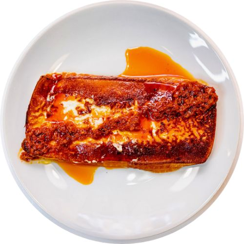

Queso Herreño a la plancha
Al igual que en otras islas canarias, donde la ganaderia es escasa debido al terreno volcánico, las cabras son las que se llevan todo el protagonismo. Por ello, otra de las tradiciones del hierro es comer carne de cabrito, siendo una de las comidas típicas de esta isla desde hace mucho tiempo. Además, para no comer únicamente la carne, también se le añade unas cuantas papitas arrugadas con mojo rojo o verde, convirtiéndose en un plato delicioso para los amantes de las carnes.